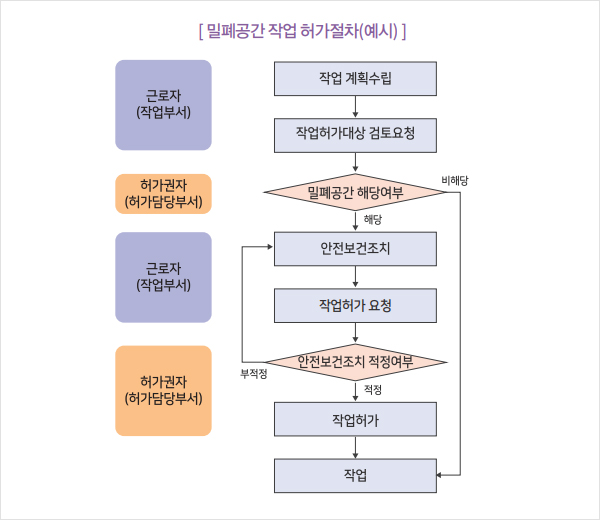

기온이 급격히 상승하는 여름철은 질식사고에 대한 각별한 주의가 필요한 계절이다. 특히 밀폐공간은 환기가 불충분한 상태에서 산소결핍이나 유해가스로 인한 건강장해가 발생하기 쉽고, 인화성 물질에 의한 화재나 폭발 등 치명적 사고가 발생하기 쉽다.
사람의 신체 조직은 산소가 필요한데 숨을 쉬지 못한다면 체내로 산소를 가져오지 못해 결국 죽음에 이르게 된다. 이를 ‘질식’이라고 한다. 일반 사고성 재해에서 사망자가 차지하는 비율은 전체 재해자의 1.1%이나, 질식재해에서 사망자가 차지하는 비율은 53.2%에 이르고 있어 2명 중 1명이 사망할 만큼 치명적이다.따라서 밀폐공간 작업의 유해·위험성, 밀폐공간작업 장소, 유해·위험요인별 대책, 밀폐공간 안전작업 허가절차 마련에 대해서 알아보도록 한다.
01밀폐공간 작업 개요
- 밀폐공간이란 환기가 불충분한 상태에서 산소결핍, 유해가스로 인한 건강장해와 인화성 물질에 의한 화재폭발 등의 위험이 있는 장소로서 밀폐공간의 경우 탄산가스, 황화수소 등의 유해물질이 가스상태로 공기 중에 존재할 수 있다.
- 저수조, 집수조, 정화조, 맨홀, 챔버, 탱크, 피트, 도랑, 파이프, 하수관, 연통, 연소실 등 환기가 되지 않거나 불량한 장소 또는 기타 밀폐된 공간은 산소농도의 범위가 18% 이상~23.5% 미만, 탄산가스의 농도가 1.5% 미만, 황화수소의 농도가 10ppm 미만 수준의 공기 상태여야 한다.
- 밀폐공간에서 작업을 수행할 경우, 사전에 유해위험요인을 파악하고 안전대책을 수립하여 사고를 미연에 방지하기 위한 대책이 선행되어야 한다. 그 예가 밀폐공간 안전작업 예방관리프로그램 수립 ∙ 시행이다. 또한 밀폐공간작업 위험성평가를 함으로써 밀폐공간 작업에서 발생할 수 있는 사고 예방을 위한 유해 위험요인을 파악하고, 관리방안을 수립해야 한다.
- 주로 밀폐공간 작업은 용역, 외주, 하청 등의 형태로 돌관작업, 불규칙한 작업, 비정상작업, 토 ∙ 일요일 작업, 야간작업 등으로 이루어지고 있어 사전에 작업근로자의 안전교육, 안전작업허가서 검토 및 실행의 현장(작업 끝점) 작동성을 강화하여야 한다.
02밀폐공간에서의 작업이 건강에 미치는 영향
가. 산소결핍증
대기 중 정상적인 산소농도는 약 21%이다. 산소농도가 18% 미만으로 떨어지면 ‘산소결핍증’을 일으킨다.
특히, 산소농도가 매우 낮은 상황에서는 한 번의 호흡만으로도 순간적으로 폐 내 산소분압이 떨어지면서 뇌 활동이 정지되어 의식을 잃게 된다.
호흡정지 시간이 4분이면 살아날 가능성은 절반으로 줄어들고, 6분 이상이면 생존 가능성이 없다.
* 빨리 구조하더라도 후유증으로 언어장해, 운동장해, 시야협착, 환각, 건망증, 성격이상 등이 남을 수 있다.
나. 황화수소(H2S) 중독
황화수소는 계란 썩는 냄새가 나는 가스로 화학산업에서 사용하기도 하지만, 미생물이 유기물을 분해하는 과정에서도 발생하여 중독을 일으킨다.
낮은 농도에서는 가벼운 자극을 주는 정도이지만 고농도에서는 폐조직을 손상시키거나 호흡을 마비시켜 사망에 이르게 하기도 한다.
| 농도(ppm) |
건강영향 |
노출시간 |
| 10 |
8시간 작업 시 노출기준 |
8시간 |
| 50~100 |
가벼운 자극(눈, 기도) |
3시간 |
| 200~300 |
상당한 자극 |
1시간 |
| 500~700 |
의식불명, 사망 |
30~1시간 |
| >1,000 |
의식불명, 사망 |
수분 |
<표1>
황화수소 농도별 인체 영향
- 분뇨나 오·폐수, 펄프액 등이 있는 장소에서 황화수소가 특히 위험한 이유는 가만히 놔둘 때는 황화수소가 적게 발생할 수 있지만 이를 밟고 다니거나, 휘젓거나 섞으면 녹아있던 황화수소가 순간 고농도로 발생하여 치명적인 영향을 줄 수 있다. 이를 거품효과(Soda can effect)라고 부른다.
다. 일산화탄소(CO) 중독
일산화탄소는 무색·무취의 기체로 주로 고체연료 등이 불완전 연소 되면서 발생하여 중독을 일으킨다.
혈액 내 헤모글로빈은 공기 중 산소와 결합하여 온몸에 산소를 운반하게 되는데, 산소와 일산화탄소가 함께 존재하는 상황에서는 산소와 결합하지 않고 일산화탄소와 결합하여 결국 체내 산소 부족 상황을 일으킨다.
| 농도(ppm) |
건강영향 |
노출시간 |
| 30 |
8시간 작업 시 노출기준 |
8시간 |
| 200 |
가벼운 두통과 불쾌감 |
3시간 |
| 600 |
두통, 불쾌감 |
1시간 |
| 1,000~2,000 |
정신혼란, 매스꺼움, 두통 |
2시간 |
| 현기증 |
1.5시간 |
| 심계항진(두근거림) |
30분 |
| 2,000~2,500 |
의식불명 |
30분 |
<표2> 일산화탄소 농도별 인체 영향(출처, 안전보건공단)
라. 그 밖의 유해가스에 의한 건강장해
산업현장에서는 다양한 가스를 직접 사용하기도 하고, 부산물로서 발생하기도 한다.
이러한 가스들은 그 자체의 독성으로 근로자 건강에 영향을 주기도 하지만 밀폐된 공간에 많은 양이 존재할 경우, 그만큼 공기량이 줄어 산소 부족 상황을 일으킨다.
| 유해가스 |
주된위험 |
외관 및 냄새 |
| 아르곤(Ar) |
- 산소치환
- 바닥에 축적 가능 |
무색, 무취 |
| 질소가스(N2) |
- 산소 치환 |
무색, 무취(징후 없음) |
| 이산화탄소(CO2) |
- 산소 치환
- 유독성
- 바닥에 축적 가능 |
무색, 무취 |
| 염소(CL2) |
- 유독성·폐와 눈 자극
- 바닥에 축적 가능 |
녹황색, 톡 쏘는 냄새 |
| 이산화질소(NO2) |
- 유독성·폐와 눈 자극
- 바닥에 축적 가능 |
적갈색, 쏘는 냄새 |
| 이산화황(SO2) |
- 유독성·폐와 눈 자극
- 바닥에 축적 가능 |
무색, 썩은 냄새 |
| 휘발유증기 |
- 화재와 폭발
- 바닥에 축적 가능 |
무색, 달콤한 냄새 |
| 메탄(CH2) |
- 화재와 폭발
- 상부에 축적 가능 |
무색, 무취(징후 없음) |
<표3> 그 밖의 유해가스에 의한 건강장해(출처, 안전보건공단)
03밀폐공간작업 체크리스트와 유해위험요인별 대책
가. 밀폐공간작업 체크리스트
| 유해위험요인 |
예 |
아니오 |
대책 |
| 밀폐공간에 대해 상세히 이해하고 있는가? |
○ |
○ |
① |
| 밀폐공간 작업장소가 산소결핍이나 유해가스의 발생이 우려되는가? |
○ |
○ |
②, ③ |
| 밀폐공간 안전작업 절차가 수립되어 있는가? |
○ |
○ |
② |
| 밀폐공간 작업장소에서의 안전수칙이 수립되어 있는가? |
○ |
○ |
③ |
| 밀폐공간 작업장소에 감시인을 배치하였는가? |
○ |
○ |
④ |
| 밀폐공간 출입관리 절차가 있는가? |
○ |
○ |
⑤ |
| 밀폐공간 작업에서 산소결핍 및 유해가스 농도측정 방법을 알고 있는가? |
○ |
○ |
⑥ |
| 밀폐공간 작업에서 산소결핍 및 유해가스 농도 측정 장소에 대해 알고 있는가? |
○ |
○ |
⑦ |
| 산소농도 및 유해가스 측정 시 유의사항에 대해 알고 있는가? |
○ |
○ |
⑧ |
| 밀폐공간 작업장소는 환기가 필요한가? |
○ |
○ |
⑨ |
| 밀폐공간 작업장소에 작업감독자/작업관리자가 지명되어 있으며, 본인의 역할 및 업무를 숙지하고 있는가? |
○ |
○ |
⑩ |
| 밀폐공간 작업시 호흡보호구의 착용이 필요한가? |
○ |
○ |
⑪ |
| 작업장소에 적절한 비상용 안전보호장비가 구비되어 있는가? |
○ |
○ |
⑫ |
| 조명, 전기장치, 기계장치 등 안전작업 절차가 있는가? |
○ |
○ |
⑬ |
| 밀폐공간 작업과 관련된 교육을 실시하였는가? |
○ |
○ |
⑭ |
| 밀폐공간작업장에서 발생할 수 있는 응급상황에 대비하여 응급처치 요령을 숙지하고 있는가? |
○ |
○ |
⑮ |
나. 유해위험요인별 대책
- 본 내용은 밀폐공간 개념 및 작업장소, 안전작업절차, 안전수칙, 감시인의 배치, 밀폐공간 출입관리, 산소농도 및 유해가스농도 측정, 밀폐공간에서의 산소농도 및 유해가스 측정 장소, 산소농도 및 유해가스 측정 시 유의사항, 밀폐공간에서의 환기 시 주의사항, 작업감독자/작업 관리자의 역할, 호흡보호구 선정 및 착용, 안전보호장비, 조명, 전기 장치, 기계장치 등, 교육, 응급처치 요령 등 밀폐공간 작업에서 일어날 수 있는 질식재해를 예방하기 위한 정보를 포함하고 있으므로 밀폐공간 작업을 수행하시기 전에 적절히 이용하기 바란다.
① 밀폐공간작업 장소
- 산업안전보건기준에 관한 규칙 별표 18의 밀폐공간
-
② 안전작업 절차
| 1 |
출입 사전조사 |
- 밀폐공간 해당 여부
- 유해가스 존재 및 유해(발생) 가능성 여부 |
| 2 |
장비준비/점검 |
- 산소농도, 유해가스농도 측정기
- 환기팬, 공기호흡기 또는 송기마스크
- 대피용 기구(사다리, 섬유로프) 등 안전장구
- 화기작업이 있을 경우 방폭전구, 소방장비 등 |
| 3 |
출입조건 설정 |
- 출입자, 출입시간, 출입방법 등 결정
- 관계자 외 출입금지표지판 설치 |
| 4 |
출입 전 산소 및
유해가스농도측정 |
- 산소 및 유해가스(H2S, CO2, CO, CH4 등) 농도 측정
- 측정지점수, 측정방법을 준수하여 실시 |
| 5 |
환기실시 |
- 작업장소에 따라 적합한 환기방법, 환기량 적용 |
| 6 |
밀폐공간보건작업 허가서 작성 및 허가자 결재 |
- 작업허가서 양식 활용
- 화기작업 허가는 밀폐공간보건작업 허가내용에 포함
- 프로그램 추진팀장에 결재 |
| 7 |
감시인 배치 |
- 감시인 배치 및 작업관리 |
| 8 |
감시모니터링 실시 |
- 밀폐공간 내 작업상황 상시 확인
- 작업자와 연락체제 구축 |
| 9 |
통신수단 구비 |
- 무전기 등 작업자와 감시인의 연락용 장비 구비
- 비상 연락체제 구축
- 대피용 기구 등 구비: 송기마스크, 사다리, 섬유로프 등 |
| 10 |
밀폐공간 작업허가서를 작업장에 게시 |
- 밀폐공간 출입구 등에 게시 |
| 11 |
밀폐공간출입 |
- 사다리 등을 이용
- 출입인원을 확인 |
| 12 |
문제 발생 시 사후보고 |
- 관리감독자 등 추진팀에 연락
- 재해자 발생 시 119 연락 |
- 밀폐공간의 작업여건 등 사전조사를 실시한다(도면검토 및 현장조사).
- 유해가스 및 산소농도 측정기 등 측정 장비 및 개인보호구 등을 준비한다.
- 출입조건을 설정한다.
- 출입 전 유해공기를 측정한다.
- 밀폐공간 작업허가서 작성 및 허가자 결재를 득한다.
- 화기작업 시 화기작업허가서를 취득한다.
- 감시인을 지정한다.
- 통신수단을 구비한다.
- 관계자 외 출입 금지 표지판을 게시한다.
- 사고 발생 시 대응조치체제를 구축한다.
③ 안전수칙
- 승인받은 밀폐공간이 아니면 절대 들어가지 않는다.
- 작업 전 산소 및 유해가스농도를 측정한다.
- 작업 전 밀폐공간은 적정공기에 준하도록 환기를 한다.
- 밀폐공간에서 작업 중 작업자 임의로 공기호흡용 마스트를 벗지 않는다.
- 밀폐공간 내부에서는 절대 흡연을 하지 않는다.
- 작업 중 현기증 또는 가벼운 두통을 느낄 경우, 즉시 밖으로 대피하고 작업 책임자에게 보고한다.
- 사고를 대비하여 인공호흡장비, 소화기 등 응급구조장비를 항상 유효하게 사용할 수 있도록 한다.
④ 감시인의 배치
- 상시 작업상황을 감시할 수 있는 감시인을 지정하여 밀폐공간 외부에 배치하여야 한다.
- 감시인은 밀폐공간에 종사하는 근로자에게 이상이 있을 경우 구조요청 등 필요한 조치를 한 후 이를 안전담당자나 그 밖의 관리감독자에게 알려야 한다.
- 감시인은 응급상황 시 반드시 공기호흡기 등을 착용한 상태에서 구조하고, 이 경우 가능한 한 또 다른 감시인을 밀폐공간 외부 가까이에 위치하도록 한다.
- 작업 중 반드시 안전담당자의 지시에 따른다.
⑤ 밀폐공간 출입관리
- 밀폐공간에는 관계자 외에 출입을 금지시키고 밀폐공간 출입 금지 표지를 보기 쉬운 장소에 게시한다.
- 밀폐공간 작업 시에는 투입 인원 및 퇴장 인원을 반드시 점검한다.
- 금지표지판에는 관계자 외 출입 금지, 산소결핍에 의한 위험, 출입 시 취한 조치, 사고 시 조치, 보호구, 가스 및 산소농도 측정기, 환기설비 보관장소, 안전보건 담당자의 이름을 게시한다.
⑥ 산소농도 및 유해가스농도 측정
- 작업 시작 전 적정한 산소농도 및 유해가스 농도를 측정한다.
- 당일의 작업을 개시하기 전에 수행한다.
- 교대자가 최초로 작업을 시작하기 전에 실시한다.
- 작업에 종사하는 전체 근로자가 작업을 하고 있던 장소를 떠났다가 돌아와 작업을 재개하기 전에 실시한다.
- 근로자의 신체, 환기장치 등에 이상이 있을 때 실시한다.
- 산소농도 및 유해가스 농도는 다음을 만족하여야 한다.
⑦ 밀폐공간에서의 산소농도 및 유해가스 측정 장소
- 밀폐공간 내에서는 비교적 공기의 흐름이 일어나지 않아 같은 장소에서도 위치에 따라 현저한 차이가 나므로 측정은 다음의 장소에서 실시한다.
- 작업장소에 대해서 수직 방향 및 수평 방향으로 각각 3개소 이상 측정
- 근로자가 출입하는 장소로서 작업 시 근로자의 호흡 위치를 중심으로 측정
- 휴대용 유해 공기 농도측정기(또는 산소농도측정기) 등을 이용하여 측정
- 탱크 등 깊은 장소의 농도를 측정할 때는 고무호스나 PVC로 된 채기관(채기관은 1m마다 작은 눈금을, 5m마다 큰 눈금으로 표시하여 동시에 깊이를 측정함)으로 측정
- 유해 공기 농도측정 시에는 면적 및 깊이를 고려하여 밀폐공간 내부를 골고루 측정
⑧ 산소농도 및 유해가스 측정 시 유의사항
- 밀폐작업 공간 내부 면적 및 깊이를 고려하여 골고루 측정한다.
- 산소결핍은 비교적 공기의 흐름이 나쁜 장소에서 많이 일어나지만 같은 장소에서도 위치에 따라 현저하게 차이가 날 수 있으므로 가능한 많은 장소에서 측정을 실시한다.
- 측정자는 측정방법을 충분히 숙지한 상태에서 산소농도를 측정하여야 하며, 보호구 없이 측정장소에 함부로 들어가서는 안 된다.
- 긴급사태에 대비해 감시인을 1인 이상 배치하여야 하며, 전락방지를 위해 보조자도 구명밧줄을 준비해야 한다.
- 깊은 곳을 측정해야 할 경우에는 공기호흡기 및 송기마스크를 착용하여야 하며, 장착식 또는 휴대식 보호가드, 방폭구조 전등 등을 내부조명으로 장착해야 한다.
⑨ 밀폐공간에서의 환기 시 주의사항
- 작업 전에는 유해 공기의 농도가 기준농도를 넘어가지 않도록 충분한 환기를 실시하여야 한다.
- 정전 등에 의한 환기중단 시에는 즉시 외부로 대피하여야 한다.
- 밀폐공간의 환기 시에는 급기구와 배기구를 적절하게 배치하여 작업장 내에 환기가 효과적으로 이루어지도록 하여야 한다.
- 급기구는 작업자에 근접하여 설치한다.
- 급기 시에는 작업자 위로 급기구를 위치시켜 신선한 공기를 공급하고, 배기 시에는 작업공간 깊숙이 배기구를 위치시켜 유해가스 함유공기를 제거한다.
- 유해가스의 갑작스런 누출이 우려되는 경우 이동식 환기팬을 설치하고 해당 작업지점에 공기를 불어넣어(급기) 작업 중 계속 환기를 실시한다.
- 환기량은 기적의 5배 이상 신선한 외부 공기로 환기하고, 작업 중에는 시간당 20회 이상 환기하도록 한다.
- 폭발 위험구역 내에서 환기장치는 방폭형 구조를 사용하여야 한다.
- 송풍관은 가급적 구부리는 부위가 적게 하고 용접불꽃 등에 의한 구멍이 나지 않도록 난연재질을 사용하여야 한다.
⑩ 밀폐공간작업에서 작업감독자/작업관리자의 역할
- 작업감독자는 밀폐공간 안전보건 작업허가서를 발급받은 후 작업한다.
- 작업감독자는 사전에 작업자에게 작업위험요인과 이에 대한 대응 방법에 대하여 교육을 실시한다.
- 작업감독자는 작업자에게 개인보호구 착용을 숙지하도록 교육한다.
- 밀폐공간에 근로자를 종사하도록 할 때는 상시 작업상황을 감시할 수 있는 감시인을 지정하여 밀폐공간 외부에 배치한다.
- 밀폐공간 위험작업 시 출입하는 근로자의 인원을 점검하고 관계자 외 출입을 금지시킨 후 금지표지판을 보기 쉬운 장소에 게시한다.
- 밀폐공간 작업에 근로자를 종사하도록 할 때는 공기호흡기, 사다리, 로프 등 비상시 피난시키거나 구출하기 위해 필요한 기구를 비치한다.
- 긴급상황 발생 시 대응할 수 있도록 밀폐공간에 종사하는 근로자에 대하여 비상 연락체계 운영, 구조용 장비의 사용, 송기마스크 등의 착용, 응급처치에 관한 훈련을 실시하고, 그 결과를 기록 보존한다.
⑪ 호흡보호구 선정 및 착용
- 산소결핍의 우려가 있거나 유해가스가 있는 장소에 출입하거나 작업하는 경우 공기호흡기 또는 송기마스크를 반드시 착용한다.
- 공기호흡기는 산소결핍의 우려가 있는 장소에 출입하여 작업을 하고자 할 경우에는 먼저 당해 장소의 산소농도를 측정하고 환기시켜 작업환경의 산소농도를 18% 이상으로 유지하여야 한다. 환기를 할 수 없거나 환기만으로 불충분한 경우에는 공기호흡기 등의 호흡용 보호구를 반드시 착용하고 출입하여야 한다.
- 송기마스크는 활동범위에 제한을 받고 있지만 가볍고 유효 사용 기간이 길어서 일정한 장소에서의 장시간 작업에 주로 이용한다.
- 탱크, 보일러 또는 반응탑의 내부 등 통풍이 불충분한 장소에서 용접을 하는 작업에 근로자를 종사하도록 하는 때에는 작업장소를 적정한 공기상태로 유지하고, 근로자에게 송기마스크 등을 지급하여 착용하도록 한다.
- 반응기, 저장탱크 내부에서 작업할 경우 발생가능한 화학물질에 적합한 방독마스크를 착용한 후 작업을 실신한다. 단, 방독마스크는 반드시 충분한 환기가 실시된 상태에서 산소농도가 정상 농도임을 확인하여 산소결핍에 의한 질식위험이 제거된 조건하에서 착용하여야 한다.
⑫ 안전보호장비
- 밀폐공간 작업장소에서 착용하여야 할 안전보호장비의 종류는 아래와 같으며, 작업형태에 따라 적정보호구를 착용한다.
- 보안경, 보호장갑, 안전화, 보호복, 안전모, 안전밸트(safety harness) 등
- 비상상황 시 응급조치를 위한 장비는 아래와 같다.
- 호흡용 보호구, 보호복, 안전대, 사다리, 구명밧줄 및 장비, 해당 화학물질 감지장치 또는 키트 등 필요한 장비
⑬ 조명, 전기장치, 기계장치 등
- 기계장치의 가동으로 인하여 발생 가능한 예기치 않은 유해물질 누출을 방지하기 위하여 필요한 경우 잠금조치(lockout)를 수행한다.
- 어두운 밀폐공간 작업장소를 밝히기 위하여 휴대용 랜턴을 휴대한다.
- 전기적 위험을 예방하기 위하여 위험표지를 부착한다.
- 전기를 차단할경우 태그를 부착한다.
- 전기조명 장치는 밀폐공간에서 사용 시 접지를 한다.
⑭ 교육
- 교육내용은 밀폐공간 작업과 관련된 모든 법적 요구조건을 포함한다.
- 밀폐공간 작업과 연관된 유해위험성을 교육한다.
- 밀폐공간 작업의 파악 및 주의에 대한 절차를 교육한다.
- 안전작업 수행서, 비상상황 절차 등을 교육한다.
- 작업관리감독자는 사전에 작업자에게 작업위험요인과 이에 대한 대응방법에 대하여 교육을 실시하여야 한다.
- 비상시에 작업자를 피난시키거나 구출하기 위하여 안전대, 사다리, 구명밧줄 등 필요한 장비의 사용에 대해 교육한다.
- 부적절한 작업자세로 인한 근골격계질환 예방을 위한 스트레칭에 대해 교육한다.
⑮ 응급처치 요령
- 밀폐공간작업에서는 평상시에 응급비상연락체계가 항상 정비되어 있어야 하며, 응급재해자가 발생하였을 때는 병원 또는 구조대에 연락함과 동시에 그 재해자에게 의사의 치료를 받을 수 있도록 하기 전까지 적절한 조치를 하여야 한다.
- 먼저 근로자가 안면 창백, 호흡수 증가, 현기증 신체의 이상을 호소하는 경우에는 즉시 작업을 중단하고 재해자를 안전한 곳으로 대피시켜야 한다.
- 대피 후, 혹은 대피 중에 재해자의 호흡이 멎게 되면 최단기간 내에 인공호흡을 실시해야 한다. 호흡정지 후에도 4~5분 동안은 심장이 계속 박동하기 때문인데, 인공호흡은 소생 시까지 계속해야 한다.
- 또 밀폐공간작업으로 인해 재해가 발생한 작업장에 대해서는 산소결핍의 우려가 없는 것을 확인할 때까지 “관계자 외 출입금지” 표지판을 게시하여야 한다.
04안전작업허가서 발급
가. 밀폐공간작업 허가절차 마련
- 사업주는 근로자가 밀폐공간에서 작업을 하는 경우 안전조치 여부를 확인한 후 적정한 경우에만 작업을 하도록 해야 한다.
※ 산업안전보건기준에 관한 규칙 제619조 제2항
- 이를 위해 회사 내부적으로 안전조치 사항을 확인하고 작업을 허가하는 절차를 마련하는 것이 중요하다.

(출처, 안전보건공단)
* 허가절차는 회사 규모나 조직 체계에 따라 달라질 수 있으나 밀폐공간 작업 전 안전보건조치가 적정한지에 대한 확인절차는 어떤 형태로든 포함되어야 한다.
나. 밀폐공간작업 허가
- 밀폐공간 작업허가 절차가 마련되면 허가권자는 다음 사항을 확인한 후 안전조치가 충분한다고 판단되는 경우에만 작업을 허가합니다.
※ 산업안전보건기준에 관한 규칙 제619조 제2항
- <밀폐공간 작업 전 확인·조치사항>
-
- 1)작업 일시, 기간, 장소 및 내용 등 작업 정보
* 작업위치, 작업기간, 작업내용
* 화기작업(용접, 용단 등)이 병행되는 경우 별도의 작업승인(화기작업허가 등) 여부 확인
- 2)관리감독자, 근로자, 감시인 등 작업자 정보
* 근로자 안전보건교육(특별안전보건교육 등) 및 안전한 작업방법 주지여부 확인
- 3)산소 및 유해가스 농도의 측정결과 및 후속조치 사항
* 산소·유해가스 등의 농도, 측정시간, 측정자(서명 포함)
* 최초 공기상태가 부적절할 경우 환기 실시 후 공기상태를 재측정하고 그 결과를 추가 기재
* 작업 중 적정공기 상태 유지를 위한 환기계획 기재(기계환기, 자연환기 등)
- 4)작업 중 불활성가스 또는 유해가스의 누출·유입·발생 가능성 검토 및 후속조치 사항
* 밀폐공간과 연결된 펌프나 배관의 잠금상태 여부 (펌프나 배관의 조작을 담당하는 담당자(부서)에 사전통지 및 밀폐공간 작업 종료 시까지 조작금지 요청)
- 5)작업 시 착용하여야 할 보호구의 종류
* 안전대, 구명줄, 공기호흡기 또는 송기마스크
- 6)비상연락체계
* 작업근로자와 외부 감시인, 관리자 사이에 긴급 연락할 수 있는 체계
* 밀폐공간 작업 시 외부와 상시 소통할 수 있는 통신수단을 포함
- 이때, 작업허가 유효기간은 당일 작업으로 한정해야 합니다
* 밀폐공간 내에서 정상적으로 작업을 마쳤다 하더라도 그 다음날에는 전혀 다른 조건이 될 수 있음
다. 밀폐공간작업 허가사항의 준수 및 확인
- 작업허가 사항을 작업이 종료될 때까지 해당 작업장 출입구에 게시하여야 합니다.
※ 산업안전보건기준에 관한 규칙 제619조 제3항
- 게시된 허가서에 일정 시간(예를 들어 2시간) 간격으로 공기 상태를 측정하여 기록하도록 합니다.
- 작업허가 기간 내라도 일정 시간 밀폐공간을 떠나있다가(예, 점심시간) 다시 출입하는 경우 반드시 산소 및 유해가스 농도를 측정하고 기록하도록 합니다.
- 누구든지 작업허가서와 다른 상황을 발견했을 경우, 즉시 허가권자(허가 담당부서)에게 통보하여야 합니다.
- 사업주나 관리감독자 등은 허가요건을 준수하고 작업하는지를 확인합니다.
(출처, 안전보건공단)